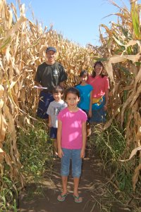

Welcome to the Sunny Acres Corn Maze! Our maze is bigger and better than ever this year. Come and explore acres of twisting and turning corn stalks. The maze is fun for the whole family.
If you haven't visited our famous Corn Maze, be sure to do so before it gets torn down on November 5. This year's maze is bigger and better than ever.